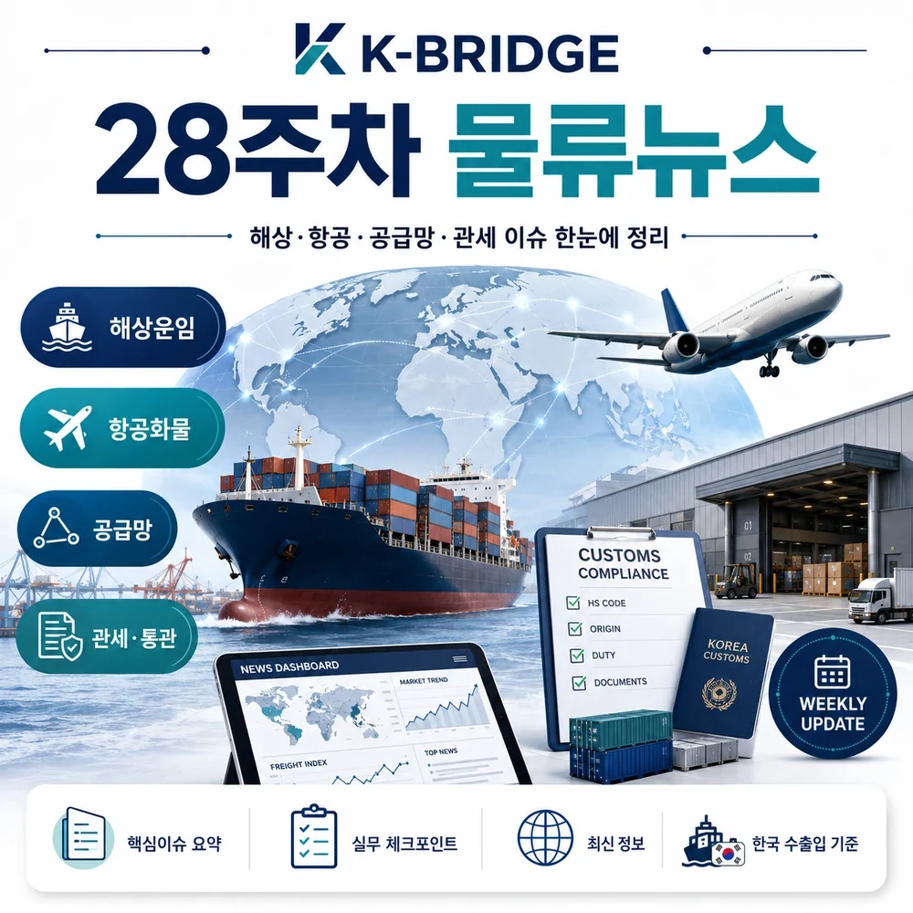
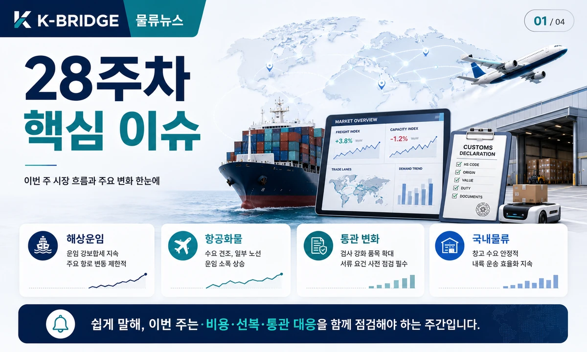
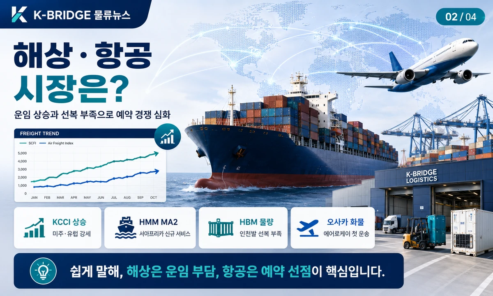
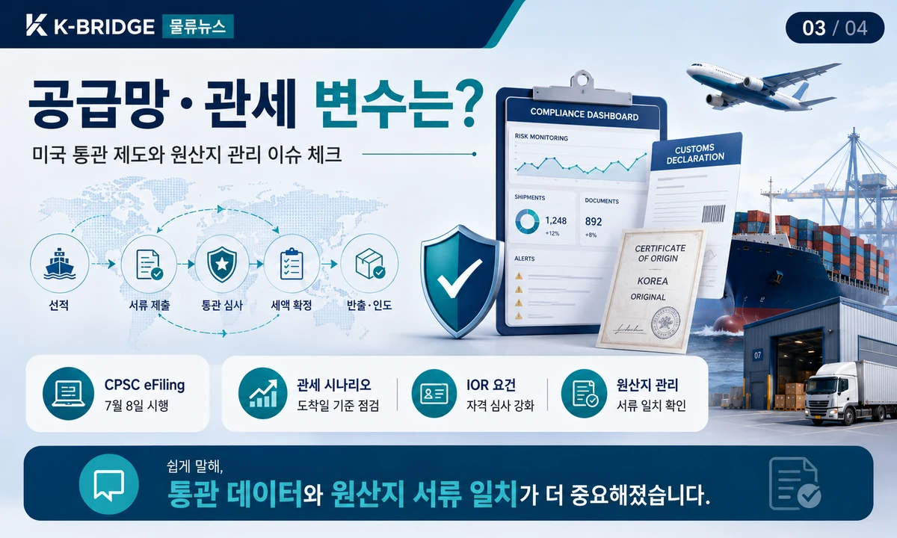
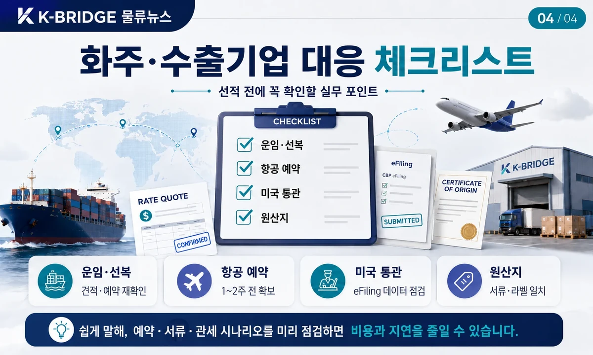

핵심 요약
28주차 물류시장은 한국발 해상운임의 가파른 상승, AI·HBM 중심 항공화물 선복 부족, 미국 통관·관세 제도 전환이 동시에 나타났습니다. 국내에서는 자율주행 화물차 유상운송과 신규 항공화물 공급이 시작되며 물류 운영 방식의 변화도 본격화됐습니다.

28주차 시장 한눈에 보기
이번 주는 운임 상승 자체보다 운임·선복·통관 규정이 동시에 빠르게 변한 점이 중요합니다. 미주와 유럽향 해상운임은 두 자릿수로 올랐고, 항공은 고부가가치 반도체 화물을 중심으로 사전예약 기간이 길어졌습니다.
| 구분 | 2026.07.06 | 주간 변화 | 해석 |
|---|---|---|---|
| KCCI 종합 | 4,330 | +10.46% | 한국발 수출 운임 전반 급등 |
| 미주 서안 | $6,922/FEU | +15.97% | 성수기·선적 앞당김 영향 |
| 미주 동안 | $8,421/FEU | +16.68% | 장거리 리드타임·공급 제약 |
| 유럽 | $5,332/FEU | +12.97% | 중동 리스크와 수요 집중 |
| 지중해 | $6,468/FEU | +10.07% | 우회운항·연료비 변동성 |
지표 기준: 한국해양진흥공사 KCCI는 부산발 40피트 컨테이너 현물운임을 중심으로 집계합니다. 실제 견적은 선사, 품목, 출항일, 부대비용에 따라 달라질 수 있습니다.

해상운송·운임 이슈
한국발 컨테이너 운임 4,330 - 22개월 만에 4,000선 상회
7월 6일 KCCI 종합지수는 4,330으로 전주보다 410포인트 올랐습니다. 미주 서안·동안과 유럽·지중해가 모두 두 자릿수 상승해 수출기업의 단기 운임 부담이 커졌습니다. SCFI도 7월 3일 기준 10주 연속 상승 흐름을 이어갔습니다.
HMM, 유럽-서아프리카 MA2 신규 서비스 개시
스페인 알헤시라스를 허브로 탕헤르·다카르·테마·레키·아비장을 연결하는 35일 왕복 서비스입니다. 혼잡도가 높은 서아프리카 기항 구간을 피더망으로 분리해 본선 정시성과 기항 유연성을 높이는 전략입니다.
팬스타 북극항로 시범운항 - 8월 22일 부산 출항 계획
부산에서 출항해 러시아 북극항로를 거쳐 함부르크와 로테르담에 기항하는 일정이 보도됐습니다. 일본 화주 2~3곳도 참여 의향을 보였지만, 선박·보험·허가·기상 등 변수가 큰 만큼 현재는 정기 상용노선이 아닌 실증 단계로 봐야 합니다.
부산항, 친환경 북극항로 허브 전략 구체화
BPA는 7월 8일 포럼에서 허브항만 인프라, 친환경 항만, AI·디지털 물류, 북극권 파트너십, 해양수도권 조성 등 5대 과제를 제시했습니다. 북극항로를 기존 해상·항공을 보완하는 장기 공급망 옵션으로 준비하는 흐름입니다.
항공화물 이슈
AI 서버·HBM 수요가 인천공항 선복을 압박
중국발 이커머스 환적과 HBM 물량이 겹치며 인천발 미국향 공급이 타이트하게 유지됐습니다. HBM3E·HBM4 기반 AI 서버 출하는 최소 1주 이상, 싱가포르·페낭·쿠알라룸푸르·타이베이향 반도체 장비는 최소 2주 전 예약이 권고됐습니다.
에어로케이, 인천-오사카 첫 항공화물 운송
7월 6일 국토교통부 인허가를 마치고 10일 인천발 오사카 노선에서 여객기 하부 화물칸을 활용한 첫 화물운송을 시작했습니다. 향후 청주공항과 로젠택배 육상망을 연계한 중부권 도어 투 도어 물류 확대를 계획하고 있습니다.
동남아 터미널 혼잡 - Door-to-Door 리드타임 확대
방콕과 마닐라 화물터미널 적체가 이어져 공항 도착 이후 반출·배송까지 시간이 길어지고 있습니다. 항공편 스케줄만 보지 말고 현지 터미널 처리와 최종 배송까지 버퍼를 확보해야 합니다.
국내물류·디지털 전환
한진, 국내 최초 25톤 자율주행 화물차 유상운송
군산항에서 한진 전주터미널을 거쳐 대전 메가허브까지 편도 118km 구간에 실제 택배화물을 싣고 주 3회 운행합니다. 안전운전자가 탑승하지만, 기술 실증을 넘어 실제 운송대가를 받는 상업 운영 단계에 진입했다는 의미가 큽니다.
화물차 유가보조금 부정수급 탐지에 AI 도입
국토교통부는 과거 적발 사례와 거래 패턴을 학습하는 지능형 관리체계로 전환하고, 주유소 현장점검을 반기 단위에서 월 단위로 확대하기로 했습니다. 1회 적발 시 지급정지 1년, 2회 적발 시 2년으로 제재도 강화됩니다.

공급망·관세·통관 이슈
미국 CPSC 인증정보 전자신고 7월 8일 시행
미국 소비자제품안전위원회 규제 대상 소비재를 수입할 때 적합성 인증정보를 전자 제출해야 합니다. 수입자·관세사·운송 파트너가 ACE 전송 주체와 인증서 데이터를 미리 맞추지 않으면 통관 지연 가능성이 커집니다. FTZ 반출 물품은 2027년 1월 8일부터 적용됩니다.
미국 Section 122 임시 관세 - 7월 24일 만료 예정
미국의 임시 글로벌 수입할증은 대통령 포고 기준 7월 24일 종료 예정입니다. 동시에 강제노동 관련 무역법 301조 관세가 한국을 포함한 여러 경제권에 10~12.5% 수준으로 검토됐다는 보도가 나왔으나, 28주차 기준 최종 세율은 확정 전이므로 시나리오별 원가 계산이 필요합니다.
미국 Importer of Record 자격 심사 강화 예고
미국행 화물의 IOR 적격 요건 강화가 9월과 11월에 단계 적용될 수 있다는 업계 안내가 나왔습니다. 해외 판매자가 명목상 수입자를 세우는 구조나 이커머스 통관은 사업자 정보, 납세 책임, 위임관계를 사전에 점검해야 합니다.
관세청, 국산 둔갑·우회수출 등 불법무역 단속 강화
관세청은 7월 10일 패션·봉제업계와 원산지 둔갑 근절 간담회를 열었고, 한국관세사회와 마약·우회수출 등 불법무역 차단 협력을 강화했습니다. 원산지표시, Invoice, C/O, 제조공정 증빙이 서로 일치하는지 확인해야 합니다.
관세 주의: 보도 단계의 예상 세율을 확정 관세로 견적서에 고정하지 마세요. 미국 도착일·신고일·원산지·HTS CODE·품목별 Section 232/301 적용 여부에 따라 실제 부담이 달라질 수 있습니다.
이번 주 추가 물류 동향

화주·수출기업 대응 체크리스트
- 미주·유럽 해상운송: 운임 유효기간, 부대비용, 선복 확정 여부를 같은 시점에 확인합니다.
- 항공화물: AI·반도체·바이오 화물은 1~2주 전 예약하고 대체 공항과 환적편을 준비합니다.
- 미국 소비재: CPSC 규제 대상 여부, 인증번호, 제조자·시험기관 정보를 ACE 제출 데이터와 맞춥니다.
- 미국 관세: 7월 24일 전후 도착·신고 시나리오로 Landed Cost를 나눠 계산합니다.
- 중동 경유: 전쟁위험 할증, 보험 담보, 항로 우회 시 추가 리드타임을 견적에 반영합니다.
- 원산지: 제품 라벨, Invoice, Packing List, C/O, 제조공정 자료의 국가 표기를 통일합니다.
- 북극항로: 시범운항 소식과 실제 상용 서비스 가능 시점을 구분해 장기 대안으로 검토합니다.
변동성이 큰 시기에는 운임보다 먼저 운송 조건을 확인하세요
케이브릿지는 해상·항공·해외특송·국내운송을 함께 검토해 화물 특성과 납기에 맞는 운송안을 안내합니다.